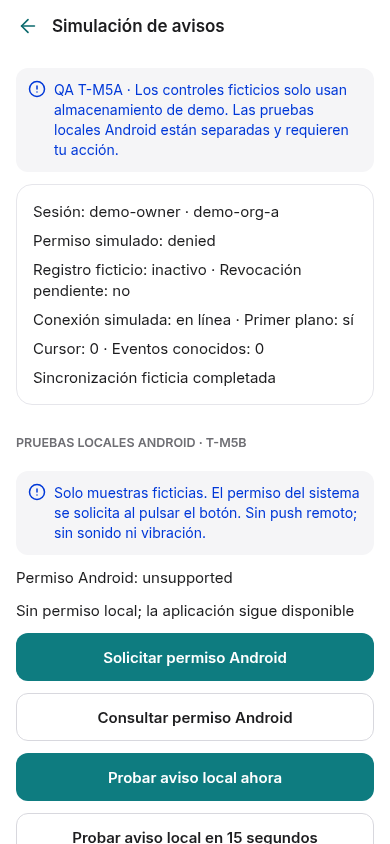
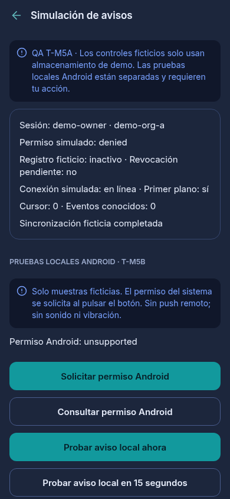
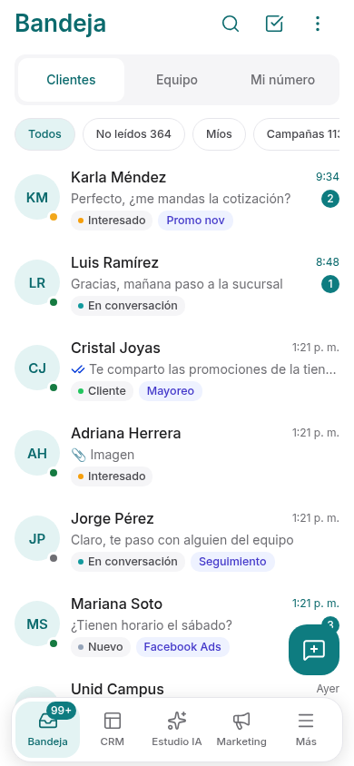
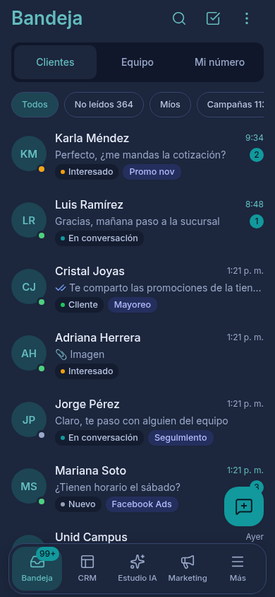
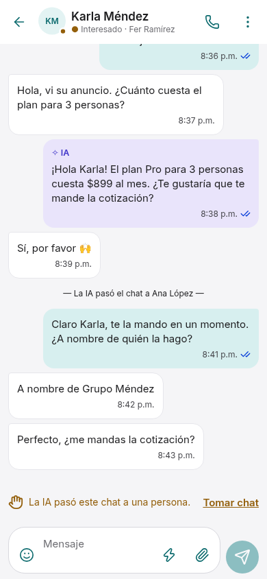
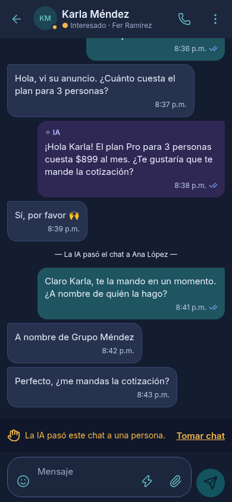
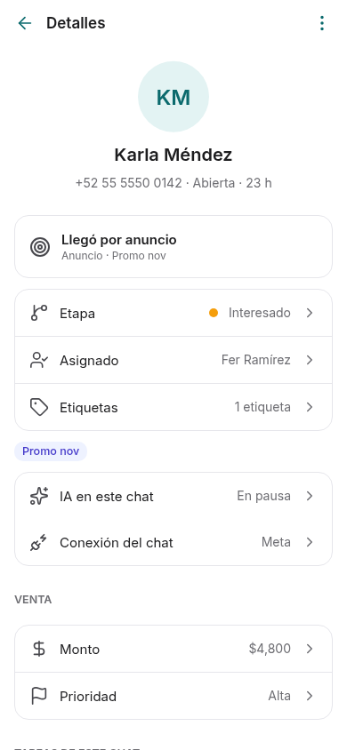
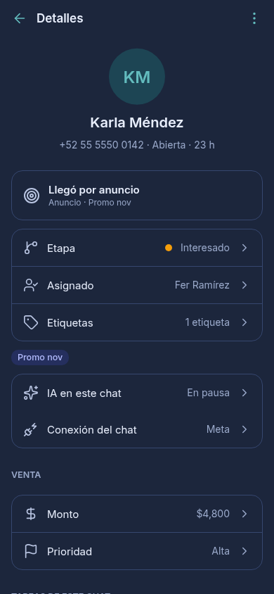
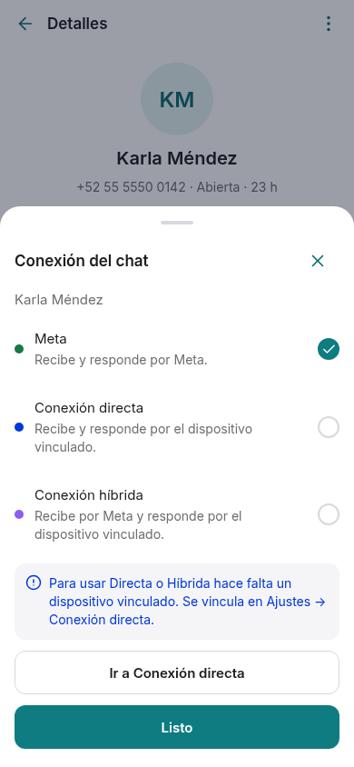
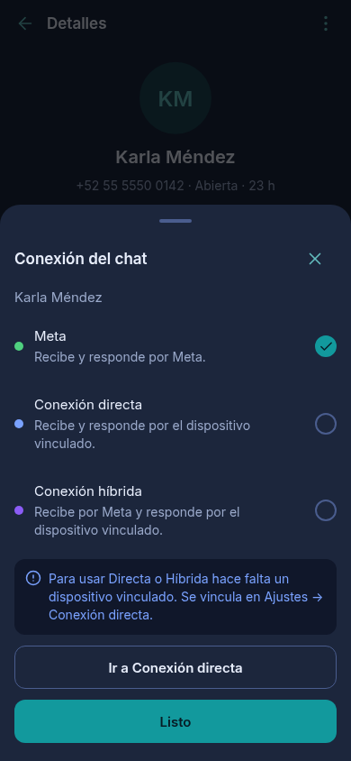

Capturas React Native Web, no Android. La app conserva las pantallas existentes; solo el laboratorio incorpora controles locales. Las capturas oficiales y el comparador anterior se conservan aquí.









